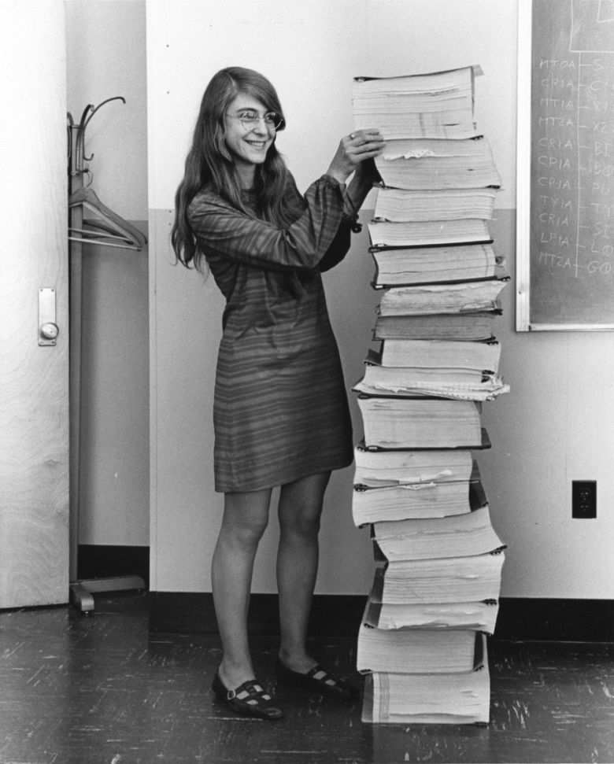

Margaret Hamilton"La primera ingeniera de software" |
|
|  | Durante muchos años parecía que uno de los mayores hitos del siglo XX, la llegada del ser humano a la Luna, hubiera sido cosa de hombres. Y eso no es verdad. Fueron muchas las mujeres que hicieron posible los grandes avances de la carrera espacial. La mayoría de ellas han estado en el anonimato durante muchos años, pero por suerte, están saliendo a la luz...
Una de esas mujeres olvidadas durante largo tiempo es nuestra protagonista de hoy. La mujer que acuñó el término “ingeniería de software”. Una visionaria de la programación informática. La persona que evitó el desastre durante el aterrizaje del Apolo XI. Margaret Hamilton, la primera ingeniera de software. |
| Margaret Hamilton nació el 17 de agosto de 1937 en Paoli, Indiana, Estados Unidos. Comenzó sus estudios de matemáticas en la Universidad de Míchigan y posteriormente se trasladó al Earlham College, donde se licenció en Matemáticas (con diplomatura en Filosofía) en 1958. Incansable, su deseo era seguir estudiando, | pero desgraciadamente, tuvo que dejar sus estudios para trabajar como profesora de matemáticas y francés en un instituto para que su marido pudiera acabar su carrera en Harvard. Posteriormente, y siguiendo su sueño, se mudó a Boston para estudiar matemáticas abstractas en la Universidad Brandeis. |
|
La vida de Hamilton empezó a cambiar en 1960, cuando entró a trabajar en el Departamento de Meteorología del Instituto Tecnológico de
Massachusetts (MIT), bajo las órdenes del profesor Edward Norton Lorenz. Gracias a sus conocimientos en matemática, a las lecciones del profesor y el gran esfuerzo que realizó para aprender varios lenguajes de programación por sí misma, fue una de las encargadas en diseñar el software que permitía predecir el tiempo utilizando los ordenadores LGP- 30 y PDP-1.
Posteriormente se involucró en el proyecto SAGE, un proyecto del Laboratorio Lincon del MIT desarrollado entre 1961 y 1963 que, aunque nació como un proyecto de predicción del clima, rápidamente pasó a ser un proyecto militar. En aquel proyecto, Margaret fue la encargada de desarrollar el software para el primer ordenador AN/FSQ-7 que buscaba aviones “no-amigos” en el espacio aéreo norteamericano. |
El gran éxito de esta misión militar permitió que Hamilton se pudiera unir al Laboratorio Charles Stark Draper del MIT. En aquel momento, esta unidad estaba trabajando en lo que definitivamente cambiaría la vida de Margaret: el Programa Apolo. Con unos conocimientos en programación extraordinarios, Margaret pronto destacó. Fue la encargada, junto con su equipo, de diseñar parte del software que hacía funcionar el Módulo de Mando y el Módulo Lunar, y probablemente, la persona que evitó el fracaso de la misión. Minutos antes de que el módulo Lunar alunizara, hubo un fallo que hizo saltar todas las alarmas. Gracias a que el software estaba diseñado para priorizar funciones imprescindibles y descartar los que no lo eran mediante la detección precoz de errores, se evitó una sobrecarga en el sistema. Según sus propias palabras “Si el ordenador no se hubiera diseñado para recuperar errores, dudo que el Apolo hubiera aterrizado en la Luna”. Pero lo hizo. |
Aprovechando los conocimientos adquiridos en la detección de errores, en 1976 cofundó la empresa Higher Order Software (HOS). Posteriormente, en 1986 creó Hamilton Technologies, también dirigido a la prevención de errores de software.
Margaret Hamilton fue una auténtica pionera en una época en la cual la programación no se consideraba ni ciencia. Y lo hizo con determinación, contra viento y marea, aprendiendo lenguajes informáticos de forma autodidacta. Ayudó a crear lo que serían las bases de la programación, las bases de la ingeniería de software, término que ella misma acuñó. Según cuenta, muchos compañeros de la NASA se burlaron de ella cuando utilizó aquel término por primera vez, y lo siguieron haciendo hasta que un día un “gurú” de la programación le dio la razón: aquel término era correcto y la ingeniería de software una nueva rama de la ciencia.
El esfuerzo de Margaret se ha visto recompensado en los innumerables premios que ha recibido a lo largo de su vida. Además del Exceptional Space Act Award de la NASA, vio reconocida su labor con la Medalla Presidencial de la Libertad en 2006, el mayor reconocimiento concedido a un civil en Estados Unidos.